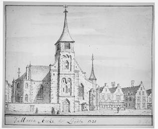
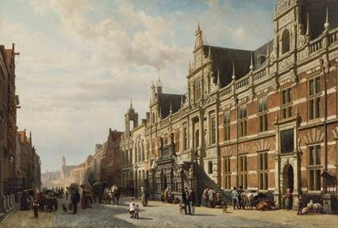
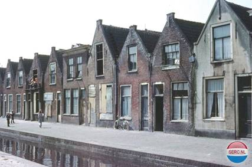
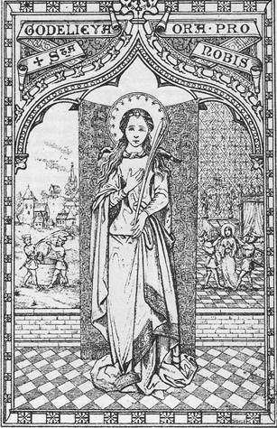
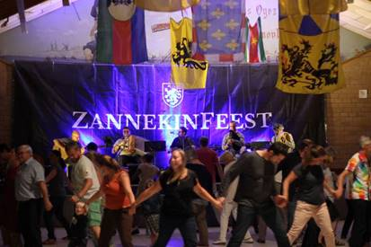

> nieuwsbrief
> JGe jg. - Xe trimester JAAR
Bijdragen over:
|
(Heinfriedswilder/Wierre-Effroy
circa 1050 – Gistel 6 juli 1070)
Aanvankelijk
stond hier een klein oratorium. Daarna werd deze kapel in 1782
gebouwd en door Louis-Marie Longuemaux in 1829 herbouwd nabij de
plek waar Godelieve (Godelaine) haar
spinrok plantte, waarbij plots een bron ontsproot. Godelieve zag
het levenslicht in de nabijgelegen kasteelhoeve Londesvoorde (Londefort).
Uitgehuwelijkt
aan Bertolf van Gistel werd ze niettemin verstoten. Ze vluchtte
naar haar geboortegrond. Door
bemiddeling van hogerhand keerde ze terug naar Gistel waar ze
kort daarop werd gewurgd met een halsdoek en in een waterput
ondergedompeld. Bertold sneuvelde in de Slag bij Cassel (1071).
Godelieve werd
heilig verklaard op 30 juli 1084 door toedoen van Radbod II,
bisschop van Doornik-Noyon. Haar feestdag is op 6 juli. Ze wordt
vereerd voor o.a. keel- en oogaandoeningen, alsook als
behoedster van het huwelijk. Drogo, een monnik uit
Sint-Winoksbergen, beschreef haar leven in de “Vita Godeliph”,
bewaard in de bibliotheek van Sint-Omaars.
In de kerk van
Heinfriedswilder en ook in en nabij de hoeve Londesvoorde zijn
er nog verwijzingen naar Godelieve.
In Gistel
bevindt zich de Abdij Ten Putte. Godelieves relieken worden
bewaard in de Godelievebeuk van de Onze-Lieve-Vrouwekerk te
Gistel, waar jaarlijks op de eerste zondag na 5 juli de
Godelieveprocessie uitgaat.
CHAPELLE DE SAINTE-GODELAINE
(Wierre-Effroy circa 1050 – Ghistelles 6 juillet
1070)
A l’origine, se trouvait ici un petit oratoire. Ensuite, fut
construite cette chapelle en 1782 et reconstruite en 1829 par
Louis-Marie Longuemaux près de l’endroit où Godelaine planta sa
quenouille et d’où bientôt jaillit une source. Godelaine vit le jour
à la ferme du château de Londefort à quelques pas d’ici.
Mariée à Bertolf de Ghistelles, elle fut répudiée. Elle se réfugia dans
son lieu de naissance. Suite
à l’intervention des autorités, elle retourna à Ghistelles où
elle fut peu de temps après étranglée avec une écharpe et
immergée dans un puits. Bertolf
perdit la vie à
Godelaine fut canonisée le 30 juillet 1084 suite à
l’intervention de Radbod II, évêque de Tournai-Noyon. On la fête le 6
juillet. Elle est
implorée e.a. pour les affections de la gorge et des yeux, ainsi
que pour la loyauté conjugale.
Drogo, un moine de Bergues-Saint-Winoc, décrivit sa
vie dans la ‘Vita Godeliph’, conservée à la bibliothèque de
Saint-Omer.
Il existe encore des souvenirs de Godelaine dans
l’église de Wierre-Effroy et près de la ferme de Londefort.
A Ghistelles se trouve l’abbaye Ten Putte. Les reliques de
Godelaine sont conservées dans un transept de l’église
Notre-Dame. La
procession de Godelaine y a lieu annuellement le premier
dimanche qui suit le 5 juillet.
_______________________
Tot zover de
tweetalige tekst, van het eerstdaags te onhullen gedenkbord te
Heinfriedswilder.
Ontmoetingsdag te Leiden op
zaterdag 19 oktober
Dagprogramma:
10.30-11.00 uur:
ontvangst met koffie en een gebakje in Stadscafé Van der Werff,
Steenstraat 2, 2312 BW Leiden.
11.00-11.10 uur:
opening en welkomstwoord door
11.10-12. uur:
lezing door de Leidse historicus Cor Smit, met gelegenheid tot
het stellen van vragen.
12.00-12.45 uur:
Lezing. door
12.45-14.00 uur:
Lunch.
14.00-16.00 uur:
Wandeling door de stad langs punten die betrekking hebben op de
Vlaamse en Waalse immigratie.
16.00-17.00 uur:
Afsluitende borrel in
Deelnamebijdrage:
de
kostprijs van deze dag beloopt alles inbegrepen (ontvangst,
lunch, lezingen, toegangen, afsluitborrel): 40 € per persoon;
(niet leden 50 € per persoon) en dient vereffend te worden bij
inschrijving. Inschrijven
kan tot uiterlijk 15 oktober via het Zannekin-secretariaat,
Paddevijverstraat 2, B.8900 Ieper (e-adres: maurits.cailliau@skynet.be
Parkeren binnen de
singels is in Leiden erg duur. Alternatieven: Parkeergarage bij
Molen De Valk. Parkeermogelijkheid ook aan de Haagweg. Ook
mogelijk: gratis parkeren bij NS-station De Vink en vandaar met
de trein (duur: 4 min.) of met de bus (lijnen 1, 2, 3 en 4 naar
NS station Leiden Centraal). Leiden is uitstekend te bereiken
met de trein.
Omtrent het
parkeren vormt
onderstaande tip misschien wel een nuttige aanvulling: Aan de
noorduitgang van station Leiden Centraal ligt de wijk
Houtkwartier tegenover het Leids Universitair Medisch Centrum.
Op zaterdag en zondag is het vrij parkeren in deze wijk. Lopen daar vandaan
naar b.v. Stadscafé Van der Werff vraagt slechts 10-15 minuten.
Achtergrondinformatie omtrent onze dag in Leiden
Leiden, stad van vluchtelingen
In de loop van de
zestiende eeuw kreeg Leiden te maken met een grote aantallen
vluchtelingen uit de Zuidelijke Nederlanden. Dat was het directe
gevolg van harde geloofsvervolgingen in het zuiden. De Spaanse
overheid trad streng op tegen de aanhangers van de nieuwe
religies: het calvinisme en het lutheranisme. Veel
Zuid-Nederlanders namen de wijk naar de vrije Republiek, waar het
calvinisme was toegestaan.
Volgens sommige
historici moet het aantal immigranten rond de 150.000 gelegen
hebben. Een hoogtepunt lag na de val van Antwerpen in 1585.
Leiden had in 1500
ongeveer 14.250 inwoners, in 1574 12.456 inwoners en bij de
volkstelling in 1622 waren het er 44.745. De bijna
verviervoudiging van het aantal inwoners moet zijn veroorzaakt
door de massale immigratie van Zuid-Nederlanders.
De Zuid-Nederlandse
immigranten waren zowel Vlamingen en Walen, dus Nederlands- of
Franstalig. Beide gemeenschappen hebben een grote invloed
uitgeoefend op de demografische en sociaaleconomische geschiedenis
van Leiden.

De Vrouwekerk Anno 1720
De Waalse gemeenschap
De Waalse gemeenschap in Leiden heeft veel sporen achtergelaten in
de Leidse binnenstad.
In 1813 kreeg de
Waalse gemeente de Vrouwekerk van de stad in eigendom. De kerk
verkeerde op dat moment in een zeer slechte staat. Hij was
bovendien veel te groot voor de sterk geslonken Waalse gemeente.
In 1818 verzocht de gemeente de stad om een subsidie voor de
restauratie van de kerk, die niet verstrekt werd. De Vrouwekerk
was bestemd voor de sloop. De inkomsten uit de sloop kwamen ten
goede aan de Waalse gemeente, die het geld besteedde aan de
Gasthuiskerk. In 1825 werd de Vrouwekerk gesloopt, de toren volgde
in 1842. Nu nog staan er restanten van de kerk overeind.
De Waalse
gemeenschap heeft veel betekend voor de stad Leiden. Naar mate het
aantal vermogende leden toenam, kon er meer geld worden besteed
aan armenzorg, ouderenzorg en onderwijs. De gemeente stichtte drie
Waalse hofjes, dat van Pieter Loridan (1656), het
Jean-Michelshofje (1687) en het Jean-Persijnshofje (1687). Ook
werden er Waalse scholen opgericht. De scholen werden beheerd door
de Waalse diaconie, maar stonden ook open voor alle Leidse
kinderen, vooral die uit de armere milieus. Tussen 1678 en 1691
richtte de Waalse gemeente een armenbakkerij op, die gevestigd was
op de stille Rijn. In 1857 werd het Hôpital Wallon aan de
Papengracht opgericht. In 1852 werd de Bibliothèque Wallonne
gesticht en gevestigd in een gebouw aan het Pieterskerkhof. Hierin
bevond zich niet alleen de bibliotheek, maar ook het archief van
verschillende Waalse gemeentes. Sinds 1998 berust de Bibliothèque
Wallonne in de Leidse Universiteitsbibliotheek.
De achttiende eeuw
betekende de achteruitgang van de Waalse gemeente. Waren er in
1700 nog 5000 leden, enkele tientallen jaren later nog maar 2000
en aan het einde van de eeuw waren er nog 575 leden. De Waalse
scholen raakten in verval. In het begin van de achttiende eeuw
wilden verschillende leden van de gemeente geen bijdragen leveren
voor die scholen, “waar men niets leerde, zelfs geen Frans”.
Blijkbaar was de Franse taal in een heleboel gezinnen al geen
thuistaal meer.
De Vlaamse gemeenschap
Voor Leiden is
vooral het lot van het uiterste zuidwesten, de Westhoek, van
Vlaanderen van belang. Aan het eind van de zestiende eeuw was de
Leidse lakennijverheid zieltogend. Een belangrijke oorzaak van de
achteruitgang van die nijverheid was de concurrentie uit het
buitenland. Van die concurrenten was de lakenindustrie in het
uiterste zuidwesten van Vlaanderen de ergste. Hun lakens waren
veel goedkoper en moderner dan de Leidse. Er was een nieuwe
technologie ontwikkeld, de z.g. “nieuwe draperie” die een
goedkopere productie mogelijk maakte. De nieuwe burgers kwamen de
nieuwe textielnijverheid van lichte stoffen brengen. Zij brachten
in de zeventiende eeuw de Leidse lakennijverheid tot grote bloei.

In juist het
uiterste zuidwesten van Vlaanderen was de vervolging door de
Spaanse overheid het hevigst. Vooral de calvinisten moesten het in
Vlaanderen ontgelden. Daar begon het calvinisme vaste voet aan de
grond te krijgen. In 1566 begon de beeldenstorm in Steenvoorde en
die breidde zich snel uit over heel West- en Oost-Vlaanderen. De
ketterse hagenpreken in Vlaamse dorpen en steden, vooral in Gent,
waren voor de streng-katholieke Spaanse koning Philips II de
aanleiding het calvinisme krachtig te bestrijden.
De belangrijke
textielstreek in de regio met plaatsen als Ieper, Veurne,
Poperinge, Hondschote, liep leeg en de eens zo welvarende
textielnijverheid kwam stil te liggen. Ieper kromp van 15.000 naar
5.000 inwoners, Poperinge raakte vrijwel ontvolkt: van de 16.000
inwoners bleven er in 1584 nog maar 400 over. Hondschote waar in
1560 nog 12.000 inwoners waren, werd zo goed als verlaten. Er
bleef een berooid en arm Vlaanderen over: “De bloem der natie
verplaatste zich naar Holland, Zeeland en Utrecht”, schreef J.L.M.
Eggen. Elders in Vlaanderen was de toestand ongeveer hetzelfde. Om
het met Eggen te zeggen: “Wat een verschil tusschen den treurigen,
ellendigen, rampzaligen toestand der Zuidelijke Nederlanden en den
bloei, den rijkdom, de welvaart der Geünieerde Provinciën.”
Niet iedereen
vluchtte vanwege de geloofsvervolging, veel vertrokken ook om
economische redenen. Ze vertrokken samen met hun werkgever of ze
zochten gewoon een beter leven. In 1555 was er een zeer slechte
oogst met een hongersnood als gevolg. In 1557 was de winter zo
streng, dat de aanvoer van graan stagneerde. Tel daarbij nog
enkele pestepidemieën en de overlast van plunderende rondtrekkende
legers in het afgelegen gebied, en het vertrek van ook
niet-calvinistische Vlamingen is begrijpelijk.
De oorlogstoestand
in het Hollandse gewest trof de oude Leidse draperie ernstig.
Op een bezoeker in
1615 maakte Leiden een volkomen Vlaamse indruk. Die Vlaamse
uitstraling zal versterkt kunnen zijn door het in 1598 gebouwde
stadhuis en het Gemeenlandshuis, dat in 1578 door het
Hoogheemraadschap werd aangekocht en in de 1597 en 1598 grondig
werd verbouwd. Beide gebouwen waren ontworpen door Lieven de Key,
een immigrant uit Gent, die in Haarlem woonde en in die stad de
stadsbouwmeester was.
De ingeweken drapeniers brachten de textielnijverheid tot grote
bloei. In de eerste honderd jaar na het beleg van 1574 groeide
Leiden en zijn textielnijverheid explosief. Die groei dankte de
stad aan de nieuwe impulsen die Vlaamse, Waalse en Duitse
immigranten aan de textielindustrie gaven. Verschillende keren
moest de stad worden uitgebreid. In 1611, 1625, 1648 en tenslotte
in 1659 werden nieuwe wijken gebouwd. Kort na de laatste
uitbreiding (1659-1664) bereikte de stad haar grootste omvang van
60.000 à 70.000 inwoners. In de bloeiperiode van de Leidse
textielnijverheid, rond 1660, telde de stad 3500 weefgetouwen op 6
à 7000 huizen. Leiden was het grootste textielcentrum van Europa.
In de in de zeventiende eeuw nieuw aangelegde buurten was de
textiel bijna huis-aan-huis de broodwinning. In de noordelijke
wijken was 58% werkzaam in de textielnijverheid, in de nieuwe
oostelijke wijk zelfs 71%.
In de achttiende
eeuw zette het verval van de textielnijverheid in.
In de negentiende
eeuw bloeide de textielindustrie weer op en nam de bevolking weer
toe. Maar deze industrie was ingrijpend van karakter veranderd.
Nog steeds woonden er veel wevers in Leiden, maar ze werkten niet
meer thuis, maar in de fabriek. De wevershuisjes bleven bestaan,
maar veranderden van een werkplek naar onderkomens voor
arbeidskrachten. Ze verbleven daar slechts om te slapen en te eten
na dat ze van ’s morgens vroeg tot ’s avonds laat hadden gewerkt.
Met de nieuwe
industrialisatie groeide ook de woningbehoefte weer in de loop van
de negentiende eeuw. Er doken nieuwe bouwers op die een grote
vindingrijkheid aan de dag legden door bestaande woningen te
splitsen en op oude achterterreinen weer nieuwe stegen en sloppen
te creëren. Met de verhuur van arbeiderswoningen kon weer veel
geld worden verdiend.
Door de toename van
de bevolking werd het leven in die buurten steeds zwaarder. In de
zeventiende eeuw woonden in de kleine huisjes meestal gezinnen met
kinderen. In de negentiende eeuw werden veel huisjes bewoond door
meerdere gezinnen, die ook nog kinderrijk waren. Over “een ten
gronde neigende industrie, een wijdverbreid pauperisme, over de
diep gezonken staat der arbeidersbevolking, de demoralisatie”
maakte een rapport uit 1791 over de Waalse scholen gewag. Ook in
1874 was in een rapport te lezen: “Die steegjes en poorten (…)
bergen de armsten onzer arme ingezetenen. Als mieren en rupsen
krielen (…) menschen en kinderen dooréén.” De hygiënische
toestanden waren slecht.

Leiden, ter hoogte van de
Waalgracht
Na drie eeuwen
intensieve bewoning waren de wevershuisjes uitgewoond. De bewoners
waren zo arm, dat ze de huur niet of niet tijdig konden betalen.
De huisjes leverden te weinig aan winst op voor de huiseigenaren,
die niets meer deden aan onderhoud. Een enorme verkrotting van
hele buurten was het gevolg.
In 1896 kon de propvolle stad eindelijk gaan bouwen buiten de
singels. Tot dan toe behoorde het grondgebied buiten de singels
tot de aangrenzende gemeenten, zoals Leiderdorp, Zoeterwoude,
Voorschoten en Oegstgeest. Direct na de annexatie startte de stad
met de bouw van nieuwe wijken, zoals De Kooi, Leiden Noord en
Groenoord. Deze nieuwe, moderne wijken trokken veel bewoners van
de binnenstad aan. Dat bracht verlichting voor de
zeventiende-eeuwse wijken. Maar voor vele bewoners waren de huren
van de nieuwe woningen te hoog. Er bleven veel bewoners achter die
in de krotten bleven wonen.
Pas in de jaren
zestig en zeventig van de vorige eeuw werden de oude wijken
grondig aangepakt. De gemeente en grote projectontwikkelaars
hadden grootse plannen met het te renoveren grondgebied.
Wat is er nog over?
Van de Waalse gemeenschap is nog veel erfenis over. Nog altijd
worden er in de Waalse Kerk aan de Breestraat diensten in het
Frans gehouden.
Van de Vlamingen
resten nog het stadhuis en het gemeenlandshuis aan de Breestraat,
die Leidens belangrijkste straat nog steeds een Vlaamse
uitstraling geven. De wijken waarin zij hun weversvak uitoefende
of als arbeider in een fabriek werkten, zijn door renovatie en
kaalslag verdwenen. Hun aanwezigheid in die wijken was in de
negentiende eeuw nog te horen. In het stadsdialect van de
zeventiende-eeuwse wijken waren drie eeuwen later nog altijd een
Vlaamse kleuring en nog woorden uit het West-Vlaamse dialect te
horen. Door verhuizingen naar de nieuwe wijken buiten de singels
is de Vlaamse gemeenschap uiteindelijk volledig geassimileerd in
de Leidse Hollandse bevolking.
Alleen aan de
familienamen kan nog altijd de Vlaamse of Waalse herkomst nog
vastgesteld worden.
Literatuur:
J. Briels, Zuid-Nederlanders in de
Republiek. Een demografische en cultuurhistorische studie.
Sint-Niklaas: Danthe, 1985.
J.L.M. Eggen, De invloed van
Zuid-Nederland op Noord-Nederland. Uitgeoefend op het einde
der XVIe en het begin der XVIIe eeuw. Gent: A. Siffer,
1908.
S.J. Fockema Andreӕ, ‘Uit de geschiedenis van de
Waals-hervormde Kerk te Leiden’. In: Leids Jaarboekje 1955,
p. 108-130. Zie ook: https://www.oudleiden.nl/pdf/1955.PDF.
Kees van der Wiel, Leidse wevershuisjes.
Van Godelieve kennen
wij twee levensbeschrijvingen, een historisch, een paar jaren na
haar dood geschreven door Drogo, een monnik van Sint-Winoksbergen,
en een Vita, geschreven voor l349, waarin de legende niet
ontbreekt. Godelieve werd volgens de overlevering geboren in l052
op het slot Londesvoorde te Heimfriedswilder in de buurt van
Bonen, als dochter van Heinfried en Odgiva.
Reeds als klein
meisje veroverde zij de harten, niet het minst door haar vroomheid
en liefde tot de armen. De legende zegt dat de spijzen, die zij
bij een feestmaal wegnam en naar de armen bracht bij nader
toezicht in houtspaanders veranderd waren.
Godelieve, door
velen ten huwelijk gevraagd, wordt door haar vader geschonken aan
Bertolf, heer te Snipgate bij Gistel, omdat hij de rijkste is.
Bertolf heeft bij de keuze van zijn bruid als een grillig kind
geen rekening gehouden met zijn ouders, vooral met zijn moeder
Iselinde. Nauwelijks heeft zij Godelieve te Gistel gezien, waar
het feest drie dagen duurt, of zij vat een onverbiddelijke haat op
tegen die zwarte kraai, zoals zij het Zuid-Vlaamse meisje wegens
haar donkere haren heet. De zwakkeling Bertolf verdwijnt reeds op
de eerste huwelijksdag en komt weer bij zijn ouders inwonen.
Godelieve, die
gehoopt had de gelukkige burchtvrouw te worden, wordt naar de
hoeve gestuurd. Enkel een schamel broodje wordt haar toegemeten,
waarvan de helft naar de armen gaat. Zij aanvaardt haar lot uit
liefde tot Christus, en lijdt met zachte glimlach. Die glimlach
verdwijnt even, wanneer de mensen, die haar stilaan als een
heilige beschouwen, kwaadspreken over haar man en zijn ouders,
want dat duldt zij niet.
Wanneer nieuwe
plagerij en worden uitgedacht, is het lijden haar te machtig. Met
een gezellin vlucht zij naar Londevoorde, waar Heinfried niet
weinig vergramd is wegens de schandelijke behandeling van zijn
dochter. Door tussenkomst van bisschop Radboud van Doomik en Graaf
Boudewijn van Vlaanderen aanvaardt Bertolf terug zijn vrouw te
Gistel, waar de toestand ogenschijnlijk verbeterd is, maar het
lijden blijft voortduren.

Uit die tijd komt
haar voorspelling dat zij eens boven alle vrouwen in Vlaanderen
zou verheven worden. Na een laatste onderhoud met Bertolf,
waarin hij liefde en
verzoening veinst, wordt Godelieve in de nacht van 7 of 30 juli
1080 door Bertolfs dienaars Lantbert en Hacca naar buiten gelokt
en met een doek gewurgd.
Onder de wonderen,
die later aan Godelieve’s voorspraak werden toegeschreven, is
vooral de genezing van de blinde Edith, een dochtertje uit
Bertolfs tweede huwelijk, dat het gezicht terugkreeg, nadat zij
haar ogen aan het Putje had gewassen, en de bekering van Bertolf
zelf.
Godelieve”s relieken
werden verheven, wat toen gelijkstond met heiligverklaring, door
de bisschop van Doornik op 30 juli 1084. Op de plaats waar zij
stierf, verrees zeer spoedig de abdij Ten Putte. Godelieve blijft
een van Vlaanderens meest geliefde heiligen, en jaarlijks gaan
talrijke mensen op bedevaart naar Gistel. Godelieve is afkomstig
van het Germaanse ”guda leuba” (God en lief). Wij kennen ook de
korte vorm Lieve. De Franse schrijven Godelaine en de Engelsen
Goddy.
________________
Bron: Aubert-Tillo van Biervliet, o.s.b., Heiligen
uit de Nederlanden, Uitgeverij Tabor,
Brugge, 1986, pp. 60-61.
Frans-Vlaams Zannekinfeest kent een groeiend
succes
Voor de zevende maal
werd het Frans-Vlaamse landelijke dorp Rekspoede in een Vlaamse
middeleeuwse sfeer gedompeld ter gelegenheid van het
Zannekin-feest, dat eind augustus plaats vond in het boomrijke
decor van het Groenhof. Initiatiefnemer van dit volkse gebeuren,
dat jaarlijks een groeiend aantal belangstellenden lokt, is de
Frans-Vlaming Wartje Maillet, die de Vlaamse cultuur en
geschiedenis in de Frans-Vlaamse Westhoek doet herleven.

Er wordt voor
gezorgd dat alles zo veel mogelijk in het Frans en het Nederlands
vlot verloopt. De Vlaamse Leeuw met rode tong en rode klauwen is
overal heel zichtbaar aanwezig.
Alle leeftijden zijn
vertegenwoordigd en de jongeren zijn in de meerderheid, wat
hoopvol is voor de toekomst.
Wartje Maillet is
ook de bezieler van de beweging “Twee Talen”, die ijvert voor een
tweetalige Frans-Nederlandse bewegwijzering in de Frans-Vlaamse
Westhoek. Voorts worden zijn kinderen zo veel mogelijk tweetalig
opgevoed.
De Duivelsberg is 70 jaar Nederlands
De
Duivelsberg in
het Duits Wylerberg of Teufelsberg) is een
heuvel en natuurreservaat in de gemeente Berg en Dal in
Gelderland. De
De
heuvel
behoorde tot 1949 tot het Duitse dorpje Wyler in de gemeente
Kranenburg. De Duitse naam Wylerberg is trouwens afgeleid van de
naam van dit dorp. Vanaf de berg heeft men een goed uitzicht
over de Duffelte (Düffelt),
de Duitse streek tussen Nijmegen en Kleef. De naam Duivelsberg
zou overigens afgeleid zijn van Duffelsberg.
Na
de
Tweede Wereldoorlog behoorde de Duivelsberg tot de vele kleine
gebieden die Nederland op 23 april 1949 ten koste van Duitsland
annexeerde. In tegenstelling tot de andere gebieden zoals Elten
en de Selfkant werd de Duivelsberg op 1 augustus 1963 niet
teruggegeven aan Duitsland, maar bleef het Nederlands
grondbezit.
Edouard Michielsstraat 51,
1180 Ukkel / Brussel
e-post:
leo.camerlynck@skynet.be
celfoon : 00 32 485 630 227